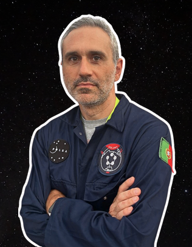

Atualmente, sou controlador de tráfego aéreo na NAV Portugal, onde trabalho desde 2004 nas valências de área, aproximação, aeródromo, supervisão e formação, tendo formação base em Engenharia Aeroespacial. A minha forte ligação à exploração espacial levou-me a participar em várias missões análogas internacionais, passando pelo Havai (EMMIHS 2023), pela equipa de controlo de missão na Áustria (AMADEE-24) e pela Polónia (AATC Analog Colony I e missão Terra Nova, na estação LunAres). Ao longo deste percurso, tive o privilégio de comandar o habitat análogo de Monsaraz em outubro de 2025, no âmbito da World’s Biggest Analog, com o objetivo de impulsionar o desenvolvimento das missões análogas em Portugal e preparar o caminho para a futura missão AMADEE-27.
Que acontecimento levou um controlador aéreo até às missões análogas?
A engenharia aeroespacial sempre fez parte do meu percurso, embora profissionalmente tenha seguido pelo controlo de tráfego aéreo. Em 2021, quando a ESA abriu candidaturas para astronautas, percebi que preenchia os requisitos e candidatei-me, juntamente com outros 22.500 europeus. Não fui selecionado, mas a experiência levou-me a procurar outras formas de contribuir para a exploração espacial. Foi assim que descobri as missões análogas, através do Austrian Space Forum, e pouco depois estava a caminho do Havai para a minha primeira missão. Percebi que não precisava de ser astronauta para fazer parte desta aventura: a exploração espacial é um esforço coletivo, e há muitas formas de contribuir.
Hawai, Polónia, Alentejo: qual foi a missão que mais te pôs à prova?
Todas me desafiaram de formas diferentes. No Havai, a minha primeira missão, o maior desafio foi perceber se aquele era realmente o meu lugar. Na Polónia, como líder da equipa de EVA, tive de encontrar soluções logísticas para que os 30 astronautas análogos pudessem realizar pelo menos uma atividade extraveicular. Na LunAres, numa missão de 21 dias, foram as dinâmicas humanas que mais me puseram à prova. Finalmente, em Monsaraz, como comandante, a responsabilidade passou a ser global: das operações à gestão da equipa. Acho que a dificuldade foi crescendo à medida que as responsabilidades também cresceram!
Monsaraz foi a primeira missão análoga em habitat em Portugal. O que significou comandá-la? Foi fácil liderar a equipa?
Foi uma mistura de entusiasmo, orgulho e responsabilidade... e uma dose saudável de síndrome do impostor! Planear o horário de todas as atividades e preparar quatro pessoas que nunca tinham participado numa missão análoga para viverem juntas durante 13 dias foi um desafio. Felizmente, tive uma equipa extraordinária. Os briefings, os debriefings e a transparência nas decisões foram fundamentais. Os anos no controlo de tráfego aéreo também ajudaram: liderar é conhecer as pessoas, perceber as suas forças e limitações e criar condições para que a equipa funcione. Com esta equipa, foi surpreendentemente fácil!
Para ti, o que é a astrobiologia?
Para mim, é a procura de vida para além da Terra. Talvez comecemos por encontrar microrganismos escondidos nas rochas ou no subsolo de outro mundo, mas isso abriria portas a uma das grandes questões da humanidade: estaremos sozinhos no Universo? E há algo fascinante nisto: ao tentarmos compreender se existe vida noutros planetas, acabamos também por compreender melhor a vida na Terra e os limites em que ela consegue sobreviver.
Que papel tem a astrobiologia numa missão análoga?
Uma missão análoga pode ajudar a testar protocolos de recolha e análise de amostras que poderão ser usados em futuras missões planetárias. Mas a investigação vai muito além da astrobiologia: inclui geologia, biologia, psicologia, robótica, engenharia e fatores humanos. E há uma ideia importante: uma missão análoga em que algo corre mal pode ser extremamente bem-sucedida. Tudo o que aprendermos com as falhas na Terra pode ajudar-nos a evitar que se repitam quando estivermos realmente noutro mundo.
O que falta em Portugal para que a astrobiologia e as missões análogas sejam mais valorizadas?
Portugal tem talento e capacidade, mas o investimento financeiro e logístico continua a ser limitado. Precisamos de dar mais visibilidade pública à exploração espacial e de criar condições para que as iniciativas tenham continuidade. A missão de Monsaraz e a preparação da AMADEE-27 são passos importantes nesse sentido. Idealmente, deveríamos ter uma estratégia nacional concertada, com o apoio da Agência Espacial Portuguesa, que promovesse todas as vertentes da exploração espacial. Só assim poderemos garantir um crescimento equilibrado e sustentável do setor.
Respirar dentro de água ou voar? Qual superpoder escolhias?
Levo mais de 20 anos a dar autorizações a quem voa. O espaço aéreo já está demasiado congestionado! Se é para mudar, que seja para debaixo de água. Tanto quanto sei, por lá ainda não há controladores a limitar os nossos movimentos! 😄
Que conselho dás a quem gostaria de participar numa missão análoga?
Não esperes por teres o currículo perfeito: investe nas coisas que realmente te motivam, aprende, experimenta e diversifica as tuas experiências. Sem dares por isso, podes acabar por construir o perfil certo para um projeto que sempre te pareceu inalcançável. Conhecimentos técnicos ajudam, claro, mas com iniciativa, vontade de aprender, adaptabilidade e capacidade de trabalhar em equipa, não há limites para o que podemos alcançar.